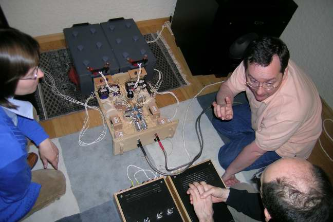
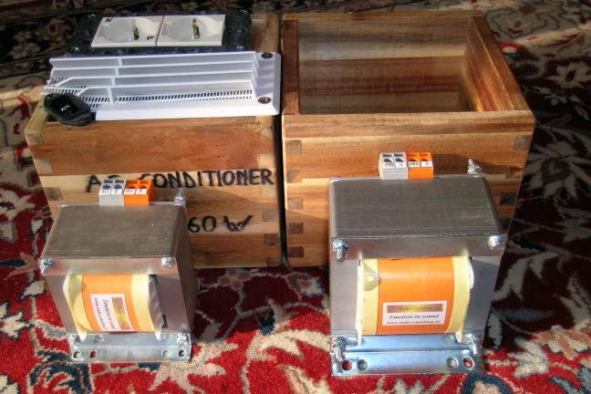
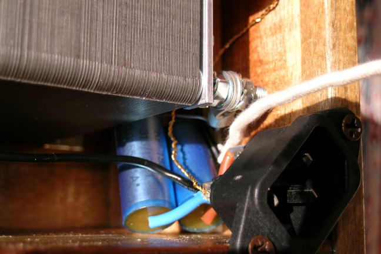
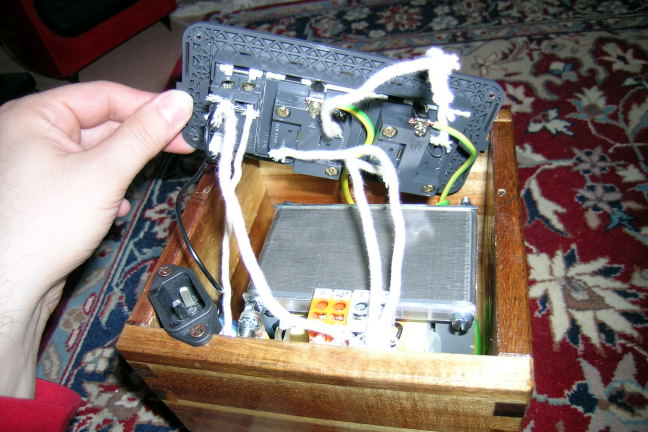
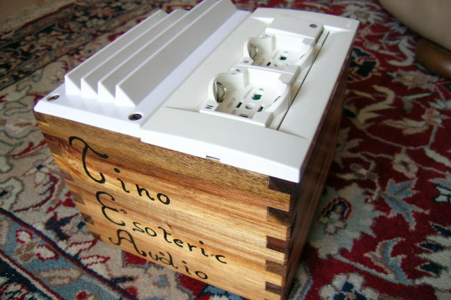

The TEA 100W conditioner, based on an Audio Consulting AC transformer:
This project is very simple, because it is foundamentally based on the optimal Audio Consulting 200 VA 1:1 AC transformer, which has the property of filtering the AC noise.

Serge Schmidlin (patron of Audio Consulting, shown on the left in the picture aside, which I took during a visit on 29 April 2006,) thinks that the high frequency noise which you can often find in the AC main (you can use the PS Audio Noise Harvester to see its presence) and in particular in the neutral wire, can be very dangerous for hi-fi reproduction, because can also saturate the core of the main transformer used in your system equipments. I don't know if that is the reason, but using some good 1:1 transformers can really improve the clearness of the sound reproduction.
I have already a 120 VA Audio Consulting 1:1 transformer, which I have used in my 60W conditioner, which basically is done with the AC transformer and two good 9.5 nF ERO (KP1832) as “Y” caps, that is, used to connect the neutral and the phase wires to ground.

This time I have done a similar conditioner, but using a 200VA AC copper transformer (costing about 250 Euro) and two 15.5 nF ERO caps. In the picture aside you can compare the 120VA (on the left) and the new 200VA (on the right) AC 1:1 transformers.
As usual for the TEA conditioners, the box is done with a very nice wooden IKEA flower vase, treated with a transparent soak. The internal wiring is done with Audio Consulting insulated silver wire, which I use in “double running”. These wires are then protected by a white cotton “tube”.
All the plugs are all from the italian WIMAR “Idea” serie, which I think are very good. In particular I have used two plugs connected in parallel to the transformer output, while the input phase goes to a switch (with a red light) before to reach the transformer input.
In the following pictures you can see some details about the 15.5 nF “Y” caps (connecting the input phase and neutral wires to ground) and the internal connections.
|
 |
 |

The final result is obtained adding a grille for air cooling. Isn't nice?A part from my sound improvement perceptions, there is also an objective way to see that this stuff “works”. In fact, in my flat usually the PS Noise Harvester bliks like crazy during evenings, even if I have nothing plugged in. Well, believe me or not, when I insert the Noise Harvester in the TEA conditioner output it immediately stops to blink! That is one of the few occasions in hi-fi when subjective audition and “measures” perfectly agree.
I have tried to repeat the experiment using a cheap 500VA 1:1 transformer, but the Noise Harvester didn't change his behaviour when connected to the wall plug or to the output of this cheap transformer. Even adding two “Y” caps didn't help. I'm sorry for you, but Audio Consulting transformers deserve their -high- price!
Tino © April 2007